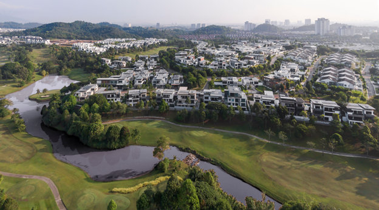

Forest City MM2H: Buy a Property, Retire Somewhere Else?
A retirement planning comparison of SFZ and Silver MM2H deposits, buying versus renting, example cash flow and key risks.
Read more
Sunway Iskandar vs Eco Botanic Semi-D: Which Is Better for Own Stay?
A balanced comparison of tenure, layouts, family routines and the key checks before choosing a Semi-D for own stay.
Read more
新山买房：CIQ、RTS 公寓还是 Iskandar Puteri？先想想你要的 Lifestyle
新山买房，没有一种 lifestyle 适合所有人。Sam Tee 从生活习惯、空间需要、出行、持有成本和人生阶段，谈 CIQ、RTS 周边公寓与 Iskandar Puteri 有地住宅的选择。
Read more
Buying Property in Johor Bahru as a Foreigner? 4 Things to Know First
Start with four checks: foreign-purchase eligibility, total costs, housing loans and the registration of your property professional.
Read more
How to Verify a Registered Property Agent in Malaysia
Five practical steps to check a REN number, mobile number, registered identity and agency attachment using the official LPPEH directory.
Read more
Can Foreigners Get a Housing Loan in Malaysia?
Compare Singapore-income and overseas buyer profiles, indicative financing, loan documents and money-transfer checks.
Read more
Aethera Residences vs CTC SkyOne: Which Walk-to-RTS Condo Suits You Better?
Compare the proposed covered RTS route, project density, own-stay layouts, multi-key flexibility and nearby retail before choosing between Aethera and SkyOne.
Read more
Medini Condo vs Bandar Wawari Landed: Rental Yield or Long-Term Growth?
Compare a Medini condo rental strategy with a Bandar Wawari landed long-hold strategy, including tenant demand, holding costs and risks.
Read more
Why More Singaporeans May Prefer RTS/CIQ Homes Over the Second Link
Why an RTS/CIQ-area high-rise may feel more natural to Singaporean buyers than a car-first Second Link lifestyle — and who should still choose the Second Link.
Read more
Buying a Condo Near JB CIQ or RTS as a Foreigner? What You Need to Check First
Five buyer-first checks for foreign buyers: the exact unit’s eligibility, total cost, daily CIQ or RTS routine, density and usable layout.
Read more
Buying Near JB CIQ? Why You Should Understand R&F Princess Cove Before Comparing Other Projects
A practical guide to R&F Princess Cove’s compact layouts, commercial setting, CIQ-oriented location and the trade-offs that matter.
Read more
1-Bedroom vs 2+1 Bedroom in JB: How Much Space Do Singles and Couples Really Need?
A simple way for singles and couples to compare a compact 1-bedroom with a 2+1-bedroom condo based on real daily use.
Read more
Walk to CIQ vs Walk to RTS: What Is the Difference for JB Property Buyers?
Compare R&F Princess Cove and SkyOne to understand the commute, price premium and trade-offs behind Walk-to-CIQ and Walk-to-RTS condos.
Read more
How Much Household Income Do You Need for a RM1.1M–RM1.4M Landed Home in Iskandar Puteri?
A young-family affordability guide using a 90% loan, 35-year tenure, about 4% interest and a 60% DSR illustration.
Read more
Is Ascent Park Overpriced at RM1.3 Million? A Comparison with Estuari and KSL Riveria
Why Ascent Park costs more than Estuari ParkHomes 2 and KSL Riveria Garden: home size, prime location and the planned Ascent Hub.
Read more
Is Forest City Really Empty? What the Network School Closure Actually Means
Network School has closed, but Forest City itself remains active. A local look at its beach, family events, commercial activity and the gap between weekend footfall and long-term demand.
Read more
The Kews Iskandar Puteri: Is This Landed Location Right for You?
A location and lifestyle guide to The Kews near Second Link, compared with Eco Botanic and Sunway Iskandar.
Read more
Horizon Hills Cluster Around RM1.6M–RM1.7M: New or Subsale?
Compare The Peak with older Golf East and Canal Garden South cluster homes by condition, built-up, surroundings, renovation and final total cost.
Read more
What Can RM1M, RM1.5M and RM2M Buy in Iskandar Puteri?
A practical budget guide to terrace, cluster and Semi-D choices in Iskandar Puteri, and why a higher property label is not always the better family decision.
Read more
Can Singaporeans Retire in Johor Bahru? A Practical 2026 Guide
An honest lifestyle-first guide to healthcare, transport, residency, budget and which JB area may suit a Singaporean retiree.
Read more
What Landed Property Can RM1 Million Buy in Iskandar Puteri in 2026?
A buyer-focused comparison of Estuari ParkHomes 2 and KSL Riveria Garden by space, location, schools, density and Singapore access.
Read more
Ascent Park Iskandar Puteri Review: Price, Layout, Pros and Cons
An independent buyer-focused review of Ascent Park, including current prices, 25-foot-wide layouts, foreign buyer eligibility and who the project may suit.
Read more
Can Foreigners Buy Property Below RM1 Million in Johor Bahru?
Three possible routes for foreign buyers: selected approved new projects, Medini and Forest City — plus what to check before paying a booking fee.
Read more
RTS Link Has Entered Testing: Which Johor Bahru Properties Could Benefit?
What the testing phase means, which central-JB homes have genuine station access, and why RTS does not guarantee rental returns.
Read more
Medini Condo Guide 2026: Prices, Lifestyle, Rental Demand and Who It Suits
A practical guide to Medini condo prices, nearby amenities, rental demand, short-stay considerations and the buyers this area may suit.
Read more
Medini vs JB City Centre Condo in 2026: Which Offers Better Investment Value?
Compare purchase price, tenant profiles, short-stay potential, holding costs and realistic net rental returns in both locations.
Read more
Forest City Golf Course: Asia Top 100 and What It Means for Property Buyers
What Forest City Golf Resort’s two internationally ranked courses may mean for lifestyle buyers, golf-villa owners and long-term demand.
Read more
Iskandar Puteri Property Price Outlook 2026: What the Data Actually Shows
Transaction evidence, price-per-square-foot trends and a realistic outlook for Iskandar Puteri property without marketing hype.
Read more
Foreign Buyer Costs in Johor 2026: 8% MOT Duty, 3% State Levy and a RM1 Million Example
What foreign buyers must budget beyond the purchase price — the new 8% residential transfer duty, Johor's 3% foreign-interest approval charge, and a clear RM1 million calculation.
Read more
MM2H Malaysia 2026: Complete Guide to the Malaysia My Second Home Programme
Three tiers (Platinum, Gold, Silver), financial requirements, the 90-day rule, Forest City SFZ track, and who actually qualifies — the complete guide for 2026.
Read more
JS-SEZ: What the Johor-Singapore Special Economic Zone Actually Means for Property Buyers
Which zones are included, the 15% flat income tax for knowledge workers, which Johor areas benefit most from corporate relocations, and whether the opportunity is already priced in.
Read more
R&F Princess Cove Phase 3: Who Should Buy and Who Should Not
An honest breakdown of who JB Town's most recognisable waterfront high-rise suits — commuters, RTS investors, freehold seekers — and who should look elsewhere.
Read more
Summer Suites JB: Is a Dual-Key Unit the Right Investment?
Freehold dual-key suites in JB Town priced at 15-year-old land cost — who the dual-key format suits, the rental strategy behind it, and what to verify before buying.
Read more
You Should Only Buy Landed in Iskandar Puteri If You Are One of These 4 Types of Buyer
The four buyer profiles that genuinely benefit from landed in Iskandar Puteri — and the red flags that suggest a high-rise or different area makes more sense.
Read more
Riveria Garden Wawari: Is KSL's New Township Worth Buying Early?
An honest look at whether buying early in Bandar Wawari makes sense, what KSL's track record suggests, and who this project is actually for.
Read more
Horizon Hills Resale vs New Launch 2026: Which Makes More Sense?
Comparing resale homes in Horizon Hills against new launches in Iskandar Puteri — pricing, condition, timeline, and which buyer profile suits each option.
Read more
Can Singaporeans Buy Property in Johor Bahru? Rules, Areas & What to Check
A practical guide to foreign-buyer checks, JB Town versus Iskandar Puteri, financing questions and who a JB home may suit.
Read more
Malaysian Working in Singapore: Should You Buy in JB Town or Iskandar Puteri?
A clear decision framework for Malaysians earning in SGD — commuter needs, family lifestyle, investment purpose, and how your work pattern determines the right area.
Read more
Retiree's Checklist for Buying Property in Johor Bahru 2026
Visa options, healthcare access, area selection, landed vs high-rise, and the financial structure retirees need to get right before buying in JB.
Read more
JB Condo vs Landed: Which Is the Better Investment in 2026?
An honest comparison of yield, capital appreciation, liquidity, tenant profiles, and which investment structure suits which buyer in the JB market.
Read more
Foreign Buyer's Guide to Johor Property: Rules, Restrictions and Best Areas 2026
Everything a foreign buyer needs to know — minimum price thresholds, landed restrictions, loan structure, RPGT, and the best areas for different buyer nationalities.
Read more
Bandar Wawari: Iskandar Puteri's Next 3,000-Acre Township
A 3,000-acre joint-development by six major developers is taking shape in Taman Wawari — here's the scale, the road access story, and what 13,000+ surrounding units mean for buyers.
Read more
Is Sunway City Iskandar Puteri Worth Buying in 2026?
An honest buyer's guide to Sunway City — 2,000 acres, RM30B GDV, Build-Own-Operate model, Second Link access, and who this township genuinely suits.
Read more
Eco Botanic vs Sunway City vs Horizon Hills: Which Should You Buy?
Direct comparison of three major Iskandar Puteri townships — tenure, schools, developer model, maturity, and which buyer profile fits each.
Read more
Schools in Sunway City Iskandar Puteri: Full Guide for Families 2026
Every school inside Sunway City — Sunway International School, SJK(C) Cheah Fah, Treehouse Playschool, 42 coding school, swim school, equestrian and more.
Read more
Sunway City Iskandar Puteri: The 2,000-Acre Township Explained
The factual overview of Sunway City — size, GDV, five pillars, BOO model, security setup, and what it means to buy within an integrated township.
Read more
Why Sunway City Iskandar Puteri Is One of Malaysia's Greenest Townships
Net zero by 2050, 4,998 MWh solar, 534,000 trees, 104,000 mangroves, GreenRE Platinum school — the real sustainability data behind Sunway City.
Read more
Sunway City Iskandar Puteri for Retirees: Lifestyle, Wellness and MM2H
Security, walkability, wellness, natural environment, and healthcare access honestly assessed for retirees evaluating Sunway City as a retirement destination.
Read more
Signature Home at Sunway City Iskandar Puteri: What Buyers Need to Know
What Signature Home is, what the Signature Home Rewards promotion means, and the key questions to ask before committing to a purchase.
Read more
Sunway City Iskandar Puteri and the JS-SEZ: What Investors Need to Know
How the Johor-Singapore Special Economic Zone affects Sunway City — commercial demand, residential spillover, and the honest long-term investment case.
Read more
Buying Near the Second Link: Sunway City vs Forest City
Two major developments near Tuas compared directly — lifestyle, tenure, schools, SFZ designation, community maturity and which buyer profile fits each.
Read more
Sunway International School Iskandar Puteri: Is It Worth Living Nearby?
Canadian/IB curriculum from K–Grade 12 — a property buyer's guide to living near or within Sunway City for school access, who it suits, and what to consider.
Read more
Forest City Ghost Town or Opportunity? The Honest Answer in 2026
The ghost town label followed Forest City for years. Here is what the current data actually shows — and what it means for buyers today.
Read more
Is Forest City Worth Buying in 2026? An Advisor's Honest Assessment
Why Forest City deserves a fresh look, which buyers may find value here, and the three checks to make before choosing a unit.
Read more
Forest City SFZ MM2H: What Property Buyers Should Know
The current core requirements, the difference between High-Rise and Golf Villa, and the checks to make before linking a home purchase with MM2H.
Read more
Forest City Tax Incentives: What They Actually Mean
Which companies and knowledge workers may qualify, what property buyers should not assume, and the checks to make before relying on any SFZ incentive.
Read more
Forest City Golf Villa: What It Is, What You Get, and Who It Suits
An inside look at the V120 Golf Villa — private garden, rooftop terrace, golf course view, and 5-year free membership. Real photos from an actual unit visit.
Read more
Living in a Forest City Highrise: What to Expect in 2026
Sea views, resort facilities, island air, and how the living environment compares to mainland Johor — an honest walkthrough for buyers considering a Forest City apartment.
Read more
Why Buyers Choose Forest City: The Island Lifestyle Nobody Talks About
The mangrove corridor, two world-ranked golf courses, five-star resort facilities, beach access, and duty-free island living — the lifestyle case for Forest City.
Read more
Iskandar Puteri Landed Property: Buyer's Guide 2026
What to know before buying a gated landed home in Eco Botanic, Horizon Hills, or East Ledang — for both Malaysians and foreigners considering Iskandar Puteri in 2026.
Read moreHorizon Hills vs Eco Botanic vs East Ledang: Which Should You Buy?
A side-by-side comparison of the three most popular landed townships in Iskandar Puteri for families and retirees — with a decision framework for local and foreign buyers.
Read more
International Schools Near Iskandar Puteri: 2026 Guide
Which established townships sit closest to Johor's best international schools — and how to plan your property purchase around school zones.
Read more
Retiring in Iskandar Puteri: Golf, Healthcare, and Cost of Living
Why retirees — both Malaysian and foreign — keep choosing Iskandar Puteri. Golf courses, private hospitals, cost of living, and what you actually need to plan for.
Read more
Will There Be Enough Population to Support Johor Bahru Town Rental Market?
1.13 million Malaysians live in Singapore. 350,000 cross daily. RTS opens in 2027. A data-driven look at who the tenants are, how many could move, and what the numbers actually say.
Read more
3 Things to Watch Before Buying in Johor Bahru Town
Leasehold traps, RTS pricing distortions, and building management issues most buyers miss. Here's what to check before you sign.
Read more
JS-SEZ and Iskandar Puteri: What the Special Economic Zone Actually Means for Property
Tax incentives, approved zones, which precincts benefit most — and whether the JS-SEZ hype is already priced in.
Read moreKota Iskandar: Johor’s Administrative Centre and Its Growing Surroundings
A review of Johor’s administrative centre, the new court complex, and nearby Bandar Wawari, Medini and Puteri Harbour.
Read more
Second Link Upgrade: What It Changes for Iskandar Puteri Commuters and Property
The Tuas checkpoint expansion, expected clearance improvements, and how faster crossings change the commute calculus for Iskandar Puteri buyers.
Read more
Medini Iskandar in 2026: What Happened and What Is Still Coming
Gleneagles and Legoland are there. The office towers are not. A clear-eyed look at what was built, what stalled, and what the JS-SEZ means for Medini's second act.
Read more
Iskandar Puteri Rental Market 2026: Who Rents Here and What Yields Look Like
Expat families, corporate relocations, medical professionals — the five tenant segments in Iskandar Puteri and what gross yields actually look like for landed homes.
Read more
New Property Launches in Iskandar Puteri 2026: What the Major Developers Are Bringing to Market
What Gamuda Land, Eco World, and UEM Sunrise are releasing — new phase pricing, what has changed since 2022, and new launch vs. subsale compared.
Read more
From Nusajaya to Iskandar Puteri: How the Area Reinvented Itself
The full arc — palm oil estates, the Iskandar Malaysia master plan, the hype cycle, the trough, and the JS-SEZ revival. What buyers in 2026 are actually inheriting.
Read more